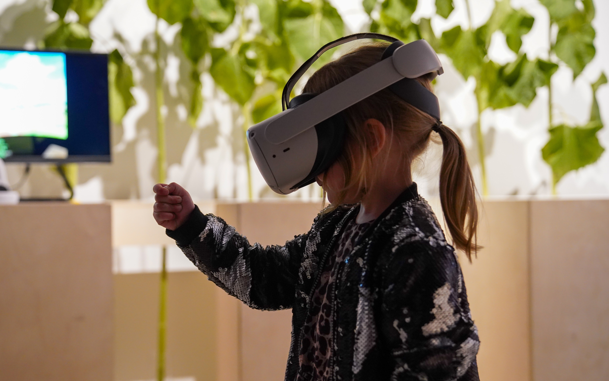
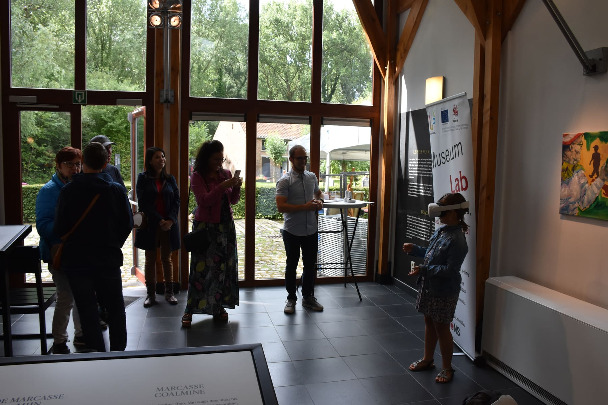
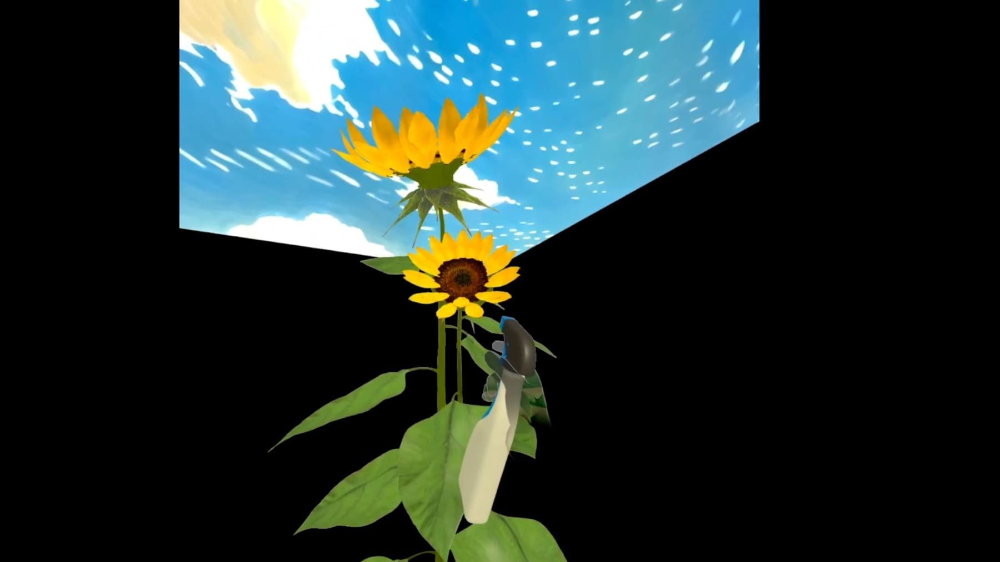
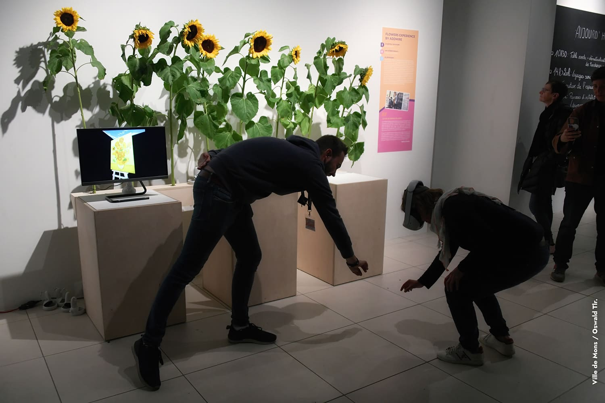

Une expérience immersive pour découvrir le lien entre la nature et les œuvres les plus connues de Van Gogh.

La Maison Van Gogh, à Ghlin, nous a confié une mission simple en apparence, ambitieuse dans les faits : relier deux univers qu'on ne pense jamais ensemble — la permaculture et les tableaux de Van Gogh. Le jardin du site en était le point de départ naturel. L'expérience a été présentée lors de la journée Van Gogh ainsi qu'à la rétrospective Museum Lab, en 2024.



Le visiteur fait pousser plusieurs fleurs, de la graine à la fleur adulte, en manipulant les objets à mains nues — sans manette. Une fois la plante arrivée à maturité, elle l'entraîne directement dans l'un des tableaux les plus connus de Van Gogh, pour en découvrir l'inspiration florale de l'intérieur. Pensée pour être jouée par toute la famille en quelques minutes, sans notice ni apprentissage.
Vidéo de présentation à venir.
Parlons de votre idée — quel que soit le stade où elle se trouve.